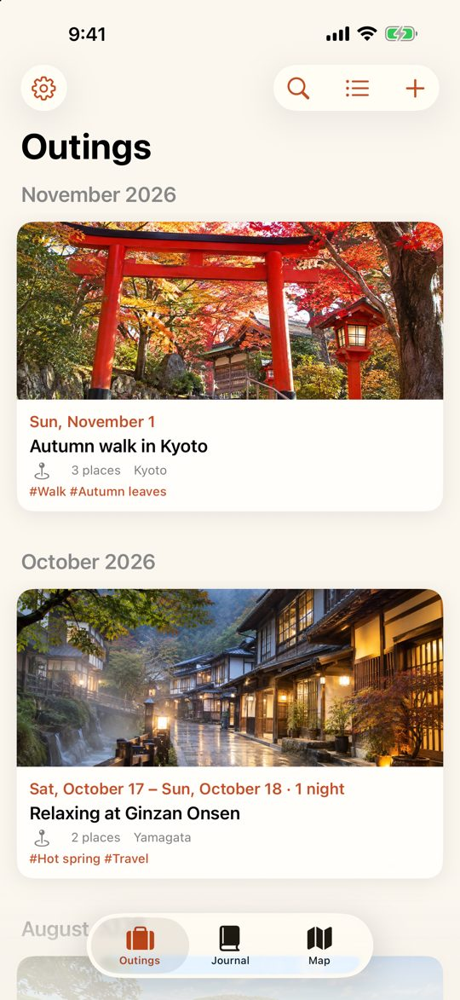
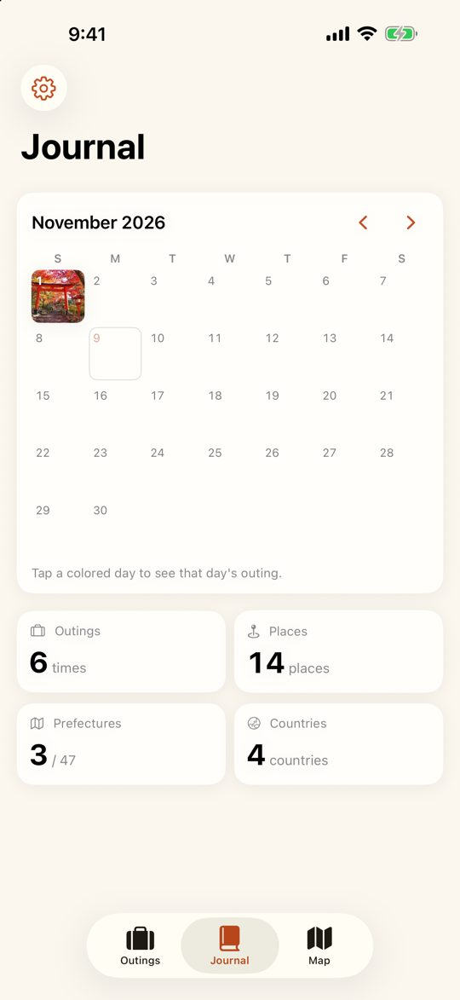
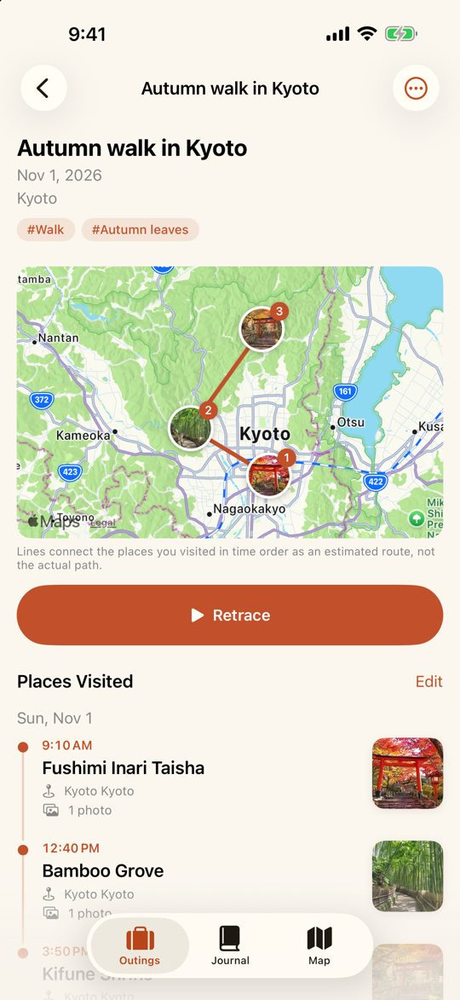

A diary, without writing.
Trippacy uses the date and location saved in your photos to put together the places you visited and the route you took. No need to take notes on the go. Just pick the dates, check the result, and save. Later, look at your photos and add a few words about what you remember.
The name combines Trip, Privacy, and Legacy. Your records stay only on your device.
The app is available in English and Japanese.
iPhone & iPad Diary Travel Map No account


Automatic records from photos
Pick a day trip or overnight dates, and Trippacy creates the places you visited and an estimated route from your photos. Place names are added automatically.
Look back like a diary
Outings are grouped by month with the date and day of the week. Write a few words in your memory notes, add tags, and search by keyword or tag.
Retrace on the map
See all your outings on one map. “Retrace” moves across the map in the order you visited, showing your photos along the way.
Look back in the calendar
See the days you went out at a glance. You can also start a record from days with photos you haven't recorded yet.
Records stay on your device
All photo analysis happens on your device. Photos and records are never sent to a server, and no account is needed.
Premium
All features are free. Premium (in-app purchase) removes ads.
- Monthly plan
- Yearly plan (1-week free trial)
- Lifetime (one-time purchase)
Prices are shown in the app and on the App Store for your region. Subscriptions can be canceled in your App Store account settings.
Support & FAQ
- My photos don't appear on the map
- Photos without location data don't appear on the map. On your iPhone, go to Settings → Privacy & Security → Location Services → Camera and choose “While Using the App” so future photos record their location. Photos received through messaging apps may have had their location removed.
- I want to add a location to photos later
- You can add a location from a photo's info (ⓘ) in the Photos app. To fix many photos at once, you can also use GeoPhoto, a location editor from the same developer. Afterwards, open the outing and choose “Load New Photos” from the “…” menu.
- Can I record places without photos?
- Yes. Long-press the map, or choose “Add Place Manually” from the “…” menu on an outing.
- Can I move my records to a new device?
- Records are saved on your device. If “Include in Device Backups” is on in Settings, you can restore them on a new device from an iCloud or computer backup. You can also save your records to a file with Settings → Backup & Data → Export to JSON, and use Import from JSON on the new device. Move the photos themselves with the Photos app (for example, iCloud Photos).
- My Premium purchase isn't showing
- Open Settings in the app (the gear at the top left) and tap “Restore Purchases.” Make sure you're signed in with the same Apple Account you used to purchase.
- How do I cancel my subscription?
- On your iPhone, go to Settings → your name → Subscriptions. Deleting the app doesn't cancel the subscription.
If your issue isn't solved, or if you have feedback, please contact us below. You can also use Settings (the gear at the top left) → Contact Us in the app.